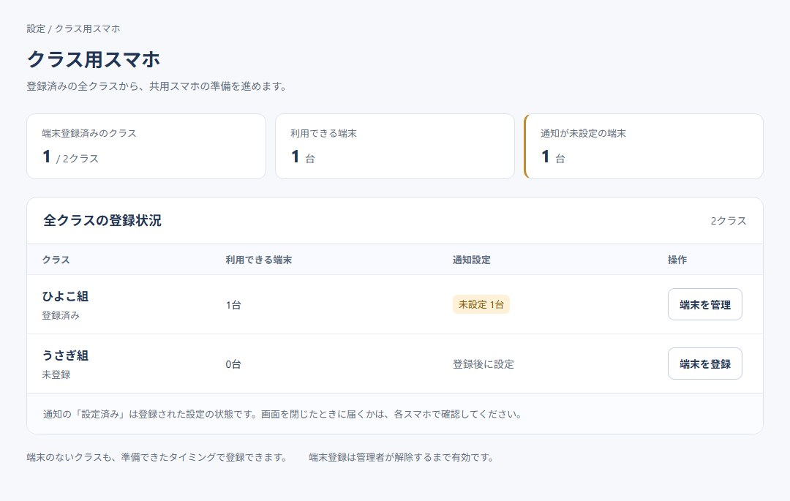
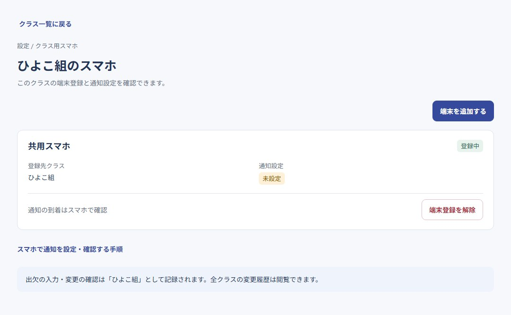
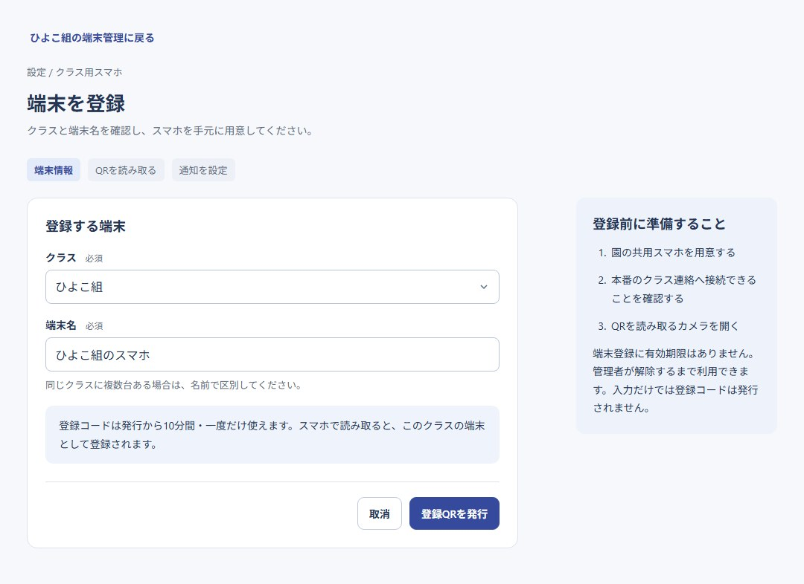
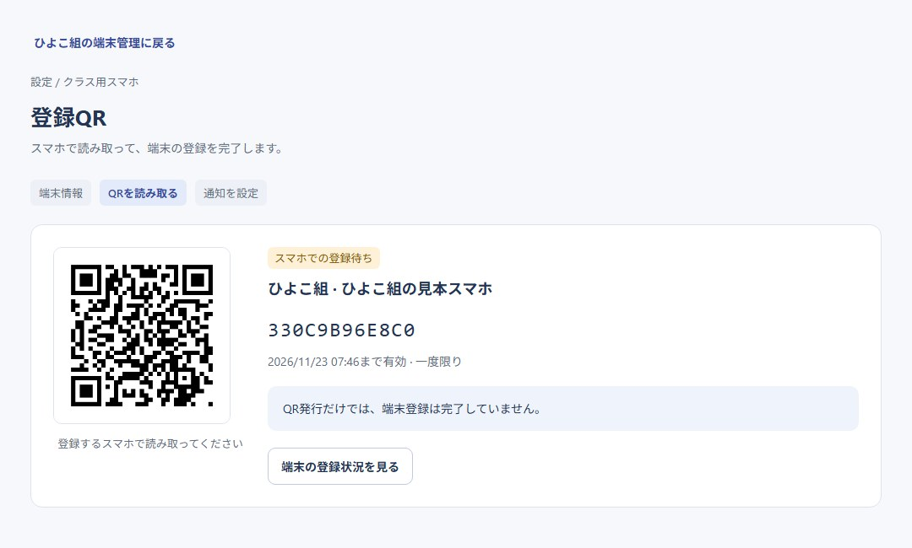
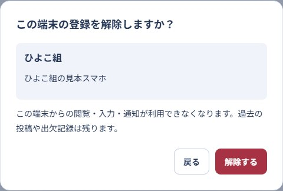

クラス用スマホを登録・解除する
管理者が「設定 → クラス用スマホ」から進みます。園で用意した専用の接続先を使い、登録するスマホを手元に用意してください。
2026年11月23日に追加した手順です。画面は架空の職員・園児のデータで撮影しています。画像を押すと拡大できます。
1クラスごとの端末と通知を確かめる
クラスの一覧から、端末登録・通知の状態を確かめます。対象クラスを開くと、端末名ごとの状態を見られます。
端末の「利用可能」と通知の「設定済み」は別です。通知はスマホ側で設定し、実際の到着も確かめます。


2クラスと端末名を指定してQRを発行する
対象クラスの登録ボタンから進み、クラスと「端末名」を確かめます。複数台あるときは区別できる名前にします。
「登録QRを発行」を押します。入力だけでは発行されず、「取消」で端末管理へ戻れます。クラス・端末名が不足している場合は入力してから発行します。

3スマホでQRを読み、登録を完了する
QRは発行から10分間・一度限りです。登録するスマホで読み、開いた画面で登録を確定します。コードが期限切れなら「新しいコードを発行する」で再発行します。
QRを表示しただけでは端末登録は完了していません。管理画面の「スマホを登録しました」または端末の登録状況を確かめ、続いてスマホの通知を設定します。
端末登録そのものには有効期限がなく、管理者が解除するまで使えます。ただし、ブラウザーのデータを消して登録情報を失った場合は再登録が必要です。

4使わなくなった端末の登録を解除する
対象クラスの端末管理で解除を選び、クラス名・端末名を確かめて「解除する」を押します。「戻る」なら解除しません。
解除後、その端末での閲覧・入力・通知は使えなくなります。過去の投稿や出欠記録は残ります。再び使う場合は、あらためて登録QRを発行して登録します。
